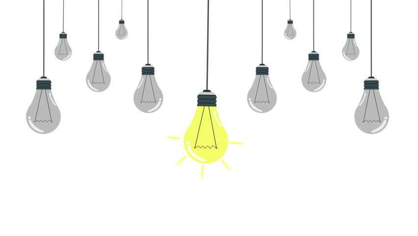

<!DOCTYPE HTML>
<html>
  <head>
    <style>
      body {
        margin: 0px;
        padding: 0px;
      }
    </style>
  </head>
  <body>

  <!--    -->
    
    <canvas id="myCanvas" width="900" height="1800">
    <div id="viewport"></div>

    </canvas>
     <!-- <canvas id="myCanvas" width=100% height=100%></canvas> -->
    <script>

      var width = screen.width; //screen width
      var canvas = document.getElementById('myCanvas');
      var context = canvas.getContext('2d');

      context.beginPath();
      context.moveTo(width/2-50, 100);
      context.lineTo(width/2+50, 100);
      context.lineWidth = 5;
      context.stroke();

      context.beginPath();
      context.moveTo(width/2, 100);
      context.lineTo(width/2, 200);
      context.lineWidth = 5;
      context.stroke();      
     
      var c = document.getElementById("myCanvas");
      var ctx = c.getContext("2d");
      ctx.beginPath();
      ctx.arc(width/2, 250, 50, 0, 2 * Math.PI);
      ctx.stroke();

      context.beginPath();
      context.moveTo(width/2, 300);
      context.lineTo(width/2, 400);
      context.lineWidth = 5;
      context.stroke();

      var c = document.getElementById("myCanvas");
      var ctx = c.getContext("2d");
      ctx.beginPath();
      ctx.arc(width/2, 410, 10, 0, 2 * Math.PI);
      ctx.stroke();

      context.beginPath();
      context.moveTo(width/2-150, 410);
      context.lineTo(width/2-10, 410);
      context.lineWidth = 5;
      context.stroke();

      context.beginPath();
      context.moveTo(width/2, 420);
      context.lineTo(width/2, 500);
      context.lineWidth = 5;
      context.stroke();

      var c = document.getElementById("myCanvas");
      var ctx = c.getContext("2d");
      ctx.beginPath();
      ctx.arc(width/2, 550, 50, 0, 2 * Math.PI);
      ctx.stroke();

     
      context.beginPath();
      context.moveTo(width/2, 600);
      context.lineTo(width/2, 700);
      context.lineWidth = 5;
      context.stroke(); 
     
      var c = document.getElementById("myCanvas");
      var ctx = c.getContext("2d");
      ctx.beginPath();
      ctx.arc(width/2, 710, 10, 0, 2 * Math.PI);
      ctx.stroke();

      context.beginPath();
      context.moveTo(width/2, 720);
      context.lineTo(width/2, 810);
      context.lineWidth = 5;
      context.stroke();

      context.beginPath();
      context.moveTo(width/2+10, 710);
      context.lineTo(width/2+160, 710);
      context.lineWidth = 5;
      context.stroke();

      var c = document.getElementById("myCanvas");
      var ctx = c.getContext("2d");
      ctx.beginPath();
      ctx.arc(width/2, 860, 50, 0, 2 * Math.PI);
      ctx.stroke();

      var canvas = document.getElementById('viewport'),
      context = canvas.getContext('2d');

      make_base();
      function make_base()
      {
        base_image = new Image();
        base_image.src = 'assets/cloud.jpg';
        base_image.onload = function(){
        context.drawImage(base_image, 0, 0);
      }
}
      
      

      
      
    </script>
  </body>
</html>     